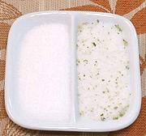

|
Salt-CitrusCalifornia | ||||
| Makes: Effort: Sched: DoAhead: |
1/3 cup * 5 min Yes |
This is for when you want a little more than just salt, like on french fries, but don't want to go as far as our Pilipili Masala. See also Option and Comments. | |||
|
1/3 2 |
c t |
Sea Salt Citric Acid (1) |
Make - (5 min)
|
|
1 1/2 |
T |
Salt-Citrus Recipe Lime / Lemon Zest |
Make - (6 to 24 hours - 10 min work)
|